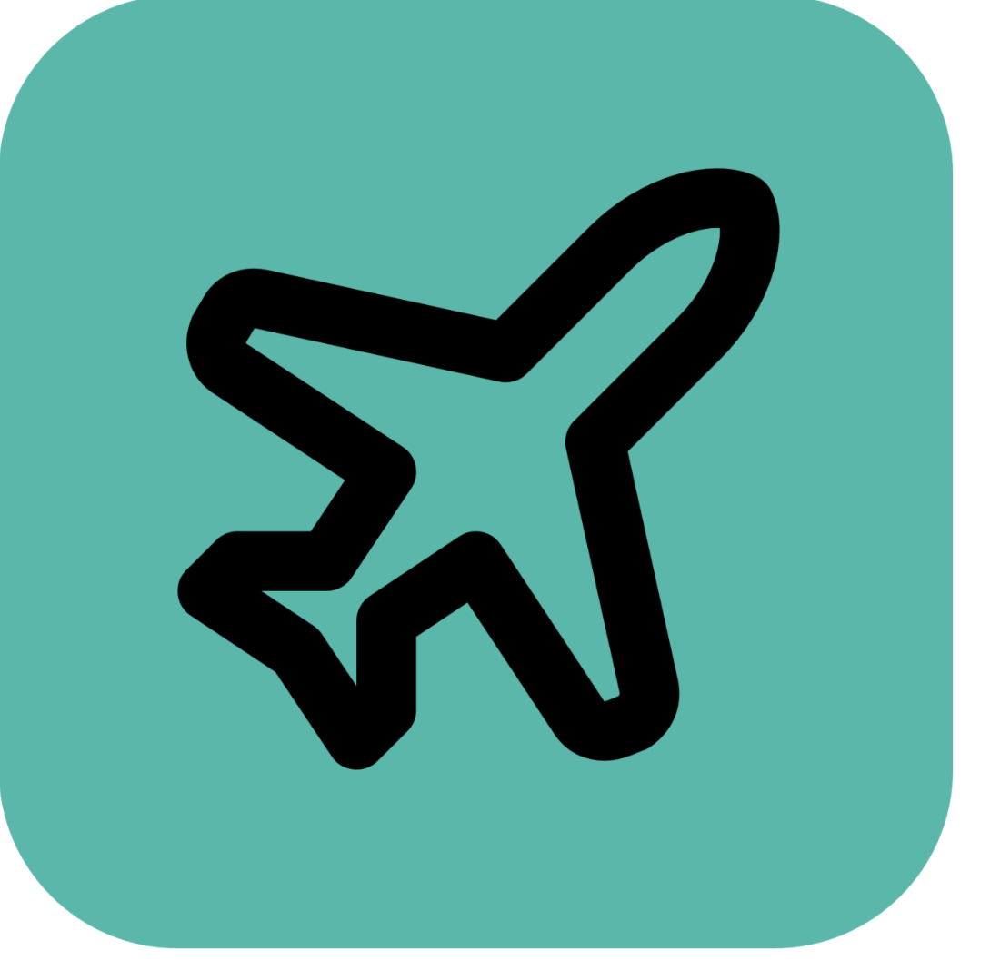

TEAM 1
Aptos: A PM Flight Simulator for Aspiring Product Managers
Asynchronous learning environments currently sever the social and cognitive ties necessary for effective peer critique, resulting in superficial exchanges that hinder student growth. By failing to support the complex social dynamics and cognitive load of giving feedback, existing tools leave students isolated and anxious. Therefore, we must design a new interaction model that scaffolds the critique process, reducing the social risk and cognitive burden of peer review to restore it as a powerful engine for learning.
Asynchronous learning
Peer critique
Social dynamics
Cognitive scaffolding